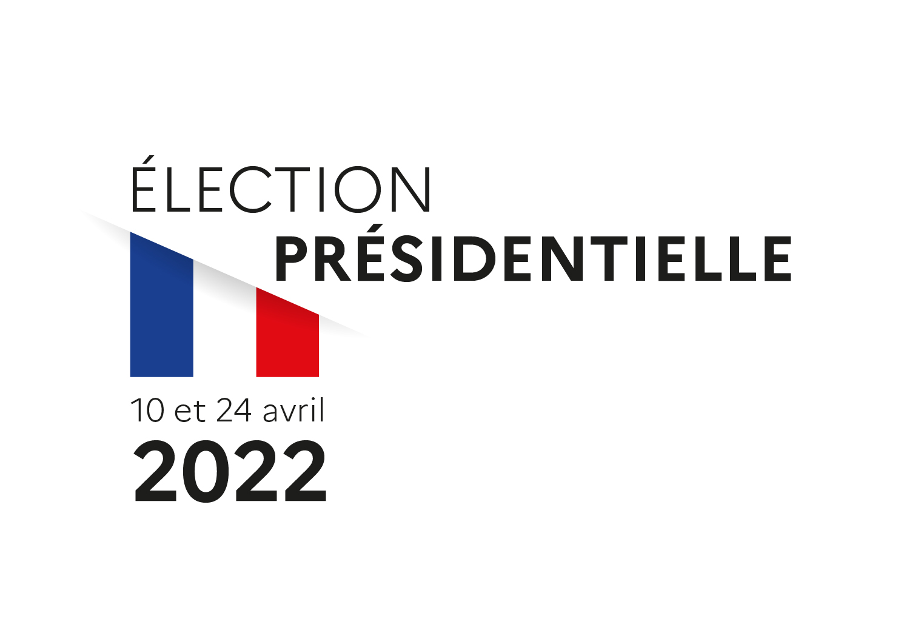

10 et 24 avril 2022

* Résultats du département au 2d tour
| Liste des candidats | Voix | % Inscrits | % Exprimés |
|---|---|---|---|
| M. Emmanuel MACRON | 62 372 | 34,51 | 50,16 |
| Mme Marine LE PEN | 61 980 | 34,30 | 49,84 |
| Nombre | % Inscrits | % Votants | |
|---|---|---|---|
| Inscrits | 180 716 | ||
| Abstentions | 41 139 | 22,76 | |
| Votants | 139 577 | 77,24 | |
| Blancs | 10 937 | 6,05 | 7,84 |
| Nuls | 4 288 | 2,37 | 3,07 |
| Exprimés | 124 352 | 68,81 | 89,09 |
En raison des arrondis à la deuxième décimale, la somme des pourcentages peut ne pas être égale à 100%.
*Rappel des Résultats du département au 1er tour
| Liste des candidats | Voix | % Inscrits | % Exprimés |
|---|---|---|---|
| Mme Marine LE PEN | 38 629 | 21,38 | 27,66 |
| M. Emmanuel MACRON | 32 417 | 17,94 | 23,21 |
| M. Jean-Luc MÉLENCHON | 24 332 | 13,46 | 17,42 |
| Mme Valérie PÉCRESSE | 9 560 | 5,29 | 6,85 |
| M. Éric ZEMMOUR | 9 529 | 5,27 | 6,82 |
| M. Jean LASSALLE | 7 817 | 4,33 | 5,60 |
| M. Yannick JADOT | 5 796 | 3,21 | 4,15 |
| M. Fabien ROUSSEL | 3 493 | 1,93 | 2,50 |
| M. Nicolas DUPONT-AIGNAN | 3 366 | 1,86 | 2,41 |
| Mme Anne HIDALGO | 2 491 | 1,38 | 1,78 |
| M. Philippe POUTOU | 1 205 | 0,67 | 0,86 |
| Mme Nathalie ARTHAUD | 1 020 | 0,56 | 0,73 |
| Nombre | % Inscrits | % Votants | |
|---|---|---|---|
| Inscrits | 180 706 | ||
| Abstentions | 37 000 | 20,48 | |
| Votants | 143 706 | 79,52 | |
| Blancs | 2 837 | 1,57 | 1,97 |
| Nuls | 1 214 | 0,67 | 0,84 |
| Exprimés | 139 655 | 77,28 | 97,18 |
En raison des arrondis à la deuxième décimale, la somme des pourcentages peut ne pas être égale à 100%.
*Résultats proclamés par le Conseil Constitutionnel.